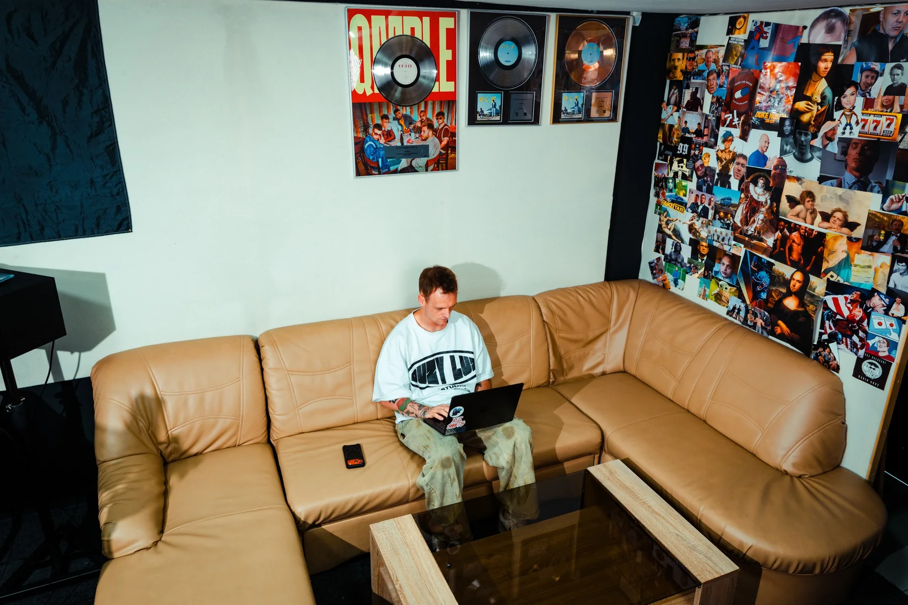

Studio nagrań · Poznań
Duży LuzStudio
Masz numer? Nagrajmy go.
Studio
Tu numer nabiera charakteru.
Twoja muzyka. Dobra atmosfera.
Duży Luz to studio nagrań, w którym możesz być sobą i skupić się na muzyce. Jest tu miejsce na pomysły, eksperymenty i kolejne podejścia, aż usłyszysz dokładnie to, co masz w głowie.
Pierwszy raz przed mikrofonem? Spokojnie, przeprowadzimy Cię przez wszystko krok po kroku. Masz już na koncie numery? Tym lepiej, szybciej złapiemy wspólny język. Dbamy o brzmienie i o atmosferę, w której po prostu chce się tworzyć.
Wpadaj. Nagrajmy coś Twojego.
Oferta i cennik
Wiesz, za co płacisz.
NagraniaRealizacja wokali, poniedziałek–czwartek
180zł/hpiątek–niedziela 200 zł/h
Mix / MasterBit w jednym tracku
400złbit w stemach 500 zł
PodkładProdukcja bark w bark
500–1000zł
GhostwritingTekst pod Ciebie
1000zł
TeledyskRealizacja i montaż
3000zł+ rental
Przed / po mixie
Usłysz różnicę.
Numer 1 / 3Piotr Pisarek
0:00Po mixie0:35
Ten sam fragment numeru w dwóch wersjach. Przełączaj w trakcie słuchania, muzyka gra dalej od tego samego miejsca. Stuknij w falę, żeby przeskoczyć. Najlepiej w słuchawkach.
Kontakt
Umów sesję.

Strefa luzu